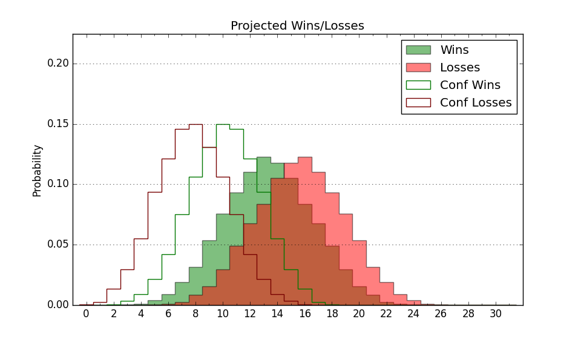

| Home | Game Probabilities | Conferences | Preseason Predictions | Odds Charts | NCAA Tournament |
| City: | Prairie View, Texas | |
| Conference: | Southwest (1st)
| |
| Record: | 0-0 (Conf) 1-2 (Overall) | |
| Ratings: | Comp.: -7.6 (251st) Net: -2.6 (202nd) Off: 108.5 (68th) Def: 111.1 (315th) SoR: 0.8 (222nd) |
| Remaining | ||||||
|---|---|---|---|---|---|---|
| Date | Opponent | Win Prob | Pred. | |||
| 11/25 | @ Arkansas St. (234) | 32.2% | L 66-71 | |||
| 11/27 | @ Oklahoma St. (53) | 6.3% | L 61-81 | |||
| 11/30 | @ Rice (324) | 50.0% | L 78-79 | |||
| 12/11 | @ Northwestern (45) | 5.6% | L 56-76 | |||
| 12/13 | @ Illinois Chicago (289) | 42.4% | L 74-76 | |||
| 12/17 | (N) Montana (246) | 48.8% | L 70-71 | |||
| 12/20 | @ New Mexico (81) | 9.5% | L 70-86 | |||
| 12/30 | @ Texas A&M (103) | 13.0% | L 67-80 | |||
| 1/2 | Grambling St. (292) | 71.8% | W 76-70 | |||
| 1/4 | Southern (181) | 49.8% | L 71-72 | |||
| 1/7 | @ Mississippi Valley St. (362) | 77.3% | W 77-68 | |||
| 1/9 | @ Arkansas Pine Bluff (312) | 46.9% | L 76-77 | |||
| 1/14 | Jackson St. (291) | 71.8% | W 72-66 | |||
| 1/16 | Alcorn St. (202) | 54.5% | W 70-69 | |||
| 1/21 | @ Alabama St. (358) | 70.5% | W 77-70 | |||
| 1/23 | @ Alabama A&M (338) | 57.6% | W 74-71 | |||
| 1/28 | @ Texas Southern (177) | 21.8% | L 69-78 | |||
| 2/4 | Bethune Cookman (320) | 76.4% | W 75-67 | |||
| 2/6 | Florida A&M (354) | 85.2% | W 75-63 | |||
| 2/11 | @ Southern (181) | 22.5% | L 68-76 | |||
| 2/13 | @ Grambling St. (292) | 42.8% | L 72-74 | |||
| 2/18 | Arkansas Pine Bluff (312) | 75.0% | W 80-72 | |||
| 2/20 | Mississippi Valley St. (362) | 92.1% | W 81-64 | |||
| 2/25 | @ Alcorn St. (202) | 26.0% | L 66-73 | |||
| 2/27 | @ Jackson St. (291) | 42.8% | L 68-70 | |||
| 3/4 | Texas Southern (177) | 48.7% | L 73-74 | |||
| Previous | Game Score | |||||
| Date | Opponent | Win Prob | Result | Off | Def | Net |
| 11/15 | Washington St. (84) | 28.2% | W 70-59 | 10.2 | 16.5 | 26.7 |
| 11/20 | @Tennessee Martin (243) | 33.6% | L 79-80 | 4.7 | -9.1 | -4.3 |
| 11/22 | @UTSA (296) | 43.5% | L 75-82 | -0.4 | -14.2 | -14.6 |
| Stats & Trends | |||||
|---|---|---|---|---|---|
| Current | Day | Week | Month | Season | |
| Composite | -7.6 | -0.1 | +0.7 | +1.2 | +1.2 |
| Comp Rank | 251 | -- | +5 | +15 | +15 |
| Net Efficiency | -2.6 | -0.3 | -14.5 | -- | -- |
| Net Rank | 202 | -4 | -105 | -- | -- |
| Off Efficiency | 108.5 | +0.0 | +6.5 | -- | -- |
| Off Rank | 68 | -- | +86 | -- | -- |
| Def Efficiency | 111.1 | -0.4 | -21.0 | -- | -- |
| Def Rank | 315 | -2 | -237 | -- | -- |
| SoS Rank | 210 | -9 | -52 | -- | -- |
| Exp. Wins | 13.4 | -0.1 | -0.5 | +0.1 | +0.1 |
| Exp. Conf Wins | 10.2 | -0.0 | +0.2 | +0.0 | +0.0 |
| Conf Champ Prob | 9.4 | +0.0 | +0.3 | -3.2 | -3.2 |

| Advanced Stats | ||
|---|---|---|
| Stat | Value | Rank |
| Off Eff FG % | 0.549 | 65 |
| Off Ast Ratio | 0.145 | 147 |
| Off ORB% | 0.229 | 260 |
| Off TO Rate | 0.149 | 112 |
| Off FT Ratio | 0.247 | 304 |
| Def Eff FG % | 0.569 | 325 |
| Def Ast Ratio | 0.137 | 174 |
| Def ORB% | 0.216 | 64 |
| Def TO Rate | 0.180 | 106 |
| Def FT Ratio | 0.685 | 363 |